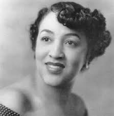
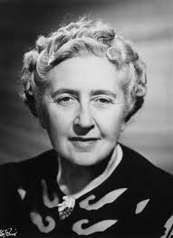
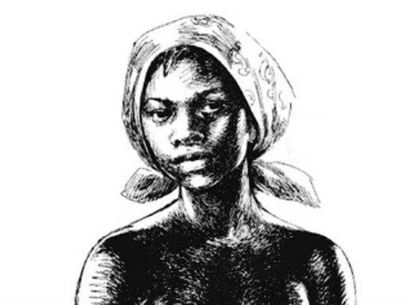

-
Mary Beatrice
Mary Beatrice Davidson Kenner, mulher negra que inventou o absorvente. Nascida em 1912 na Carolina do Norte, com genes de inventora, conquistou uma vaga na renomada Universidade de Howard, em 1931.
Ler mais -
Agatha Christie
Agatha Christie (1890-1976) foi uma escritora inglesa, que escreveu 93 livros e 17 peças teatrais. Christie é a romancista mais bem sucedida da história da literatura popular mundial em número total de livros vendidos
Ler mais -
Dandara dos Palmares
Dandara foi uma guerreira negra do período colonial do Brasil. Lutou e foi líder estrategista no quilombo dos Palmares, no século 17, no então estado de Pernambuco. Considerada a mais representativa liderança feminina
Ler mais